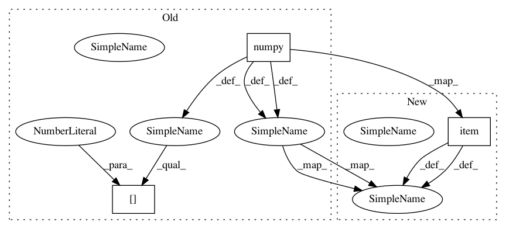

0a8e27413d721bf8d753e5e6061cc24f5bf6474f,train.py,,eval_model,#,489
Before Change
model.eval()
idx = np.random.randint(0, len(y))
length = input_lengths[idx].data.cpu().numpy()[0]
// (T,)
y_target = y[idx].view(-1).data.cpu().numpy()[:length]
if c is not None:
c = c[idx, :, :length].unsqueeze(0)
assert c.dim() == 3
print("Shape of local conditioning features: {}".format(c.size()))
if g is not None:
// TODO: test
g = g[idx]
print("Shape of global conditioning features: {}".format(g.size()))
// Dummy silence
if is_mulaw_quantize(hparams.input_type):
initial_value = P.mulaw_quantize(0, hparams.quantize_channels)
elif is_mulaw(hparams.input_type):
initial_value = P.mulaw(0.0, hparams.quantize_channels)
else:
initial_value = 0.0
print("Intial value:", initial_value)
// (C,)
if is_mulaw_quantize(hparams.input_type):
initial_input = np_utils.to_categorical(
initial_value, num_classes=hparams.quantize_channels).astype(np.float32)
initial_input = Variable(torch.from_numpy(initial_input)).view(
1, 1, hparams.quantize_channels)
else:
initial_input = Variable(torch.zeros(1, 1, 1).fill_(initial_value))
initial_input = initial_input.cuda() if use_cuda else initial_input
// Run the model in fast eval mode
y_hat = model.incremental_forward(
initial_input, c=c, g=g, T=length, softmax=True, quantize=True, tqdm=tqdm,
log_scale_min=hparams.log_scale_min)
if is_mulaw_quantize(hparams.input_type):
y_hat = y_hat.max(1)[1].view(-1).long().cpu().data.numpy()
y_hat = P.inv_mulaw_quantize(y_hat, hparams.quantize_channels)
y_target = P.inv_mulaw_quantize(y_target, hparams.quantize_channels)
elif is_mulaw(hparams.input_type):
y_hat = P.inv_mulaw(y_hat.view(-1).cpu().data.numpy(), hparams.quantize_channels)
y_target = P.inv_mulaw(y_target, hparams.quantize_channels)
else:
y_hat = y_hat.view(-1).cpu().data.numpy()
// Save audio
os.makedirs(eval_dir, exist_ok=True)
After Change
model.eval()
idx = np.random.randint(0, len(y))
length = input_lengths[idx].data.cpu().item()
// (T,)
y_target = y[idx].view(-1).data.cpu().numpy()[:length]
if c is not None:
c = c[idx, :, :length].unsqueeze(0)
assert c.dim() == 3
print("Shape of local conditioning features: {}".format(c.size()))
if g is not None:
// TODO: test
g = g[idx]
print("Shape of global conditioning features: {}".format(g.size()))
// Dummy silence
if is_mulaw_quantize(hparams.input_type):
initial_value = P.mulaw_quantize(0, hparams.quantize_channels)
elif is_mulaw(hparams.input_type):
initial_value = P.mulaw(0.0, hparams.quantize_channels)
else:
initial_value = 0.0
print("Intial value:", initial_value)
// (C,)
if is_mulaw_quantize(hparams.input_type):
initial_input = np_utils.to_categorical(
initial_value, num_classes=hparams.quantize_channels).astype(np.float32)
initial_input = torch.from_numpy(initial_input).view(
1, 1, hparams.quantize_channels)
else:
initial_input = torch.zeros(1, 1, 1).fill_(initial_value)
initial_input = initial_input.to(device)
// Run the model in fast eval mode
y_hat = model.incremental_forward(
initial_input, c=c, g=g, T=length, softmax=True, quantize=True, tqdm=tqdm,
log_scale_min=hparams.log_scale_min)
if is_mulaw_quantize(hparams.input_type):
y_hat = y_hat.max(1)[1].view(-1).long().cpu().data.numpy()
y_hat = P.inv_mulaw_quantize(y_hat, hparams.quantize_channels)
y_target = P.inv_mulaw_quantize(y_target, hparams.quantize_channels)
elif is_mulaw(hparams.input_type):
y_hat = P.inv_mulaw(y_hat.view(-1).cpu().data.numpy(), hparams.quantize_channels)
y_target = P.inv_mulaw(y_target, hparams.quantize_channels)
else:
y_hat = y_hat.view(-1).cpu().data.numpy()
// Save audio
os.makedirs(eval_dir, exist_ok=True)
In pattern: SUPERPATTERN
Frequency: 3
Non-data size: 3
Instances
Project Name: r9y9/wavenet_vocoder
Commit Name: 0a8e27413d721bf8d753e5e6061cc24f5bf6474f
Time: 2018-05-04
Author: zryuichi@gmail.com
File Name: train.py
Class Name:
Method Name: eval_model
Project Name: r9y9/wavenet_vocoder
Commit Name: 0a8e27413d721bf8d753e5e6061cc24f5bf6474f
Time: 2018-05-04
Author: zryuichi@gmail.com
File Name: train.py
Class Name:
Method Name: save_states
Project Name: PacktPublishing/Deep-Reinforcement-Learning-Hands-On
Commit Name: e4f051b6cce414997a97b896276563c4e361d0b8
Time: 2018-04-27
Author: max.lapan@gmail.com
File Name: ch09/01_cartpole_dqn.py
Class Name:
Method Name: calc_target